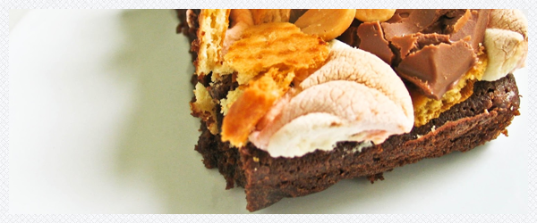

Brownie
Składniki
- 200g masła
- 200g gorzkiej czekolady
- 4 duże jajka
- 100g cukru
- 100g mąki
- 2 łyżki kakako
- 1 łyżka kawy
- dodatkowo: krakersy, orzeszki solone, czekolada mleczna oraz pianki marshmallows

Masło roztapiamy razem z czekoladą w kąpieli wodnej, jajka ubijamy mikserem.
Do puszystych jajek dodajemy cukier, kakao, kawę oraz mąkę- miksujemy. Gdy masa czekoladowo-maślana nam ostygnie dolewamy ją do ciasta i delikatnie mieszamy łyżką.
Wylewamy na blaszkę wyłożoną papierem do pieczenia.
Wstawiamy do rozgrzanego piekarnika (200stopni) i pieczemy 10minut, po tym czasie dodajemy na wierzch krakersy itp. i ponownie pieczemy ok. 7minut.
Ważne jest, aby czas pieczenia nie przekroczył 20-25 minut, bo ciasto nam wyschnie w środku.